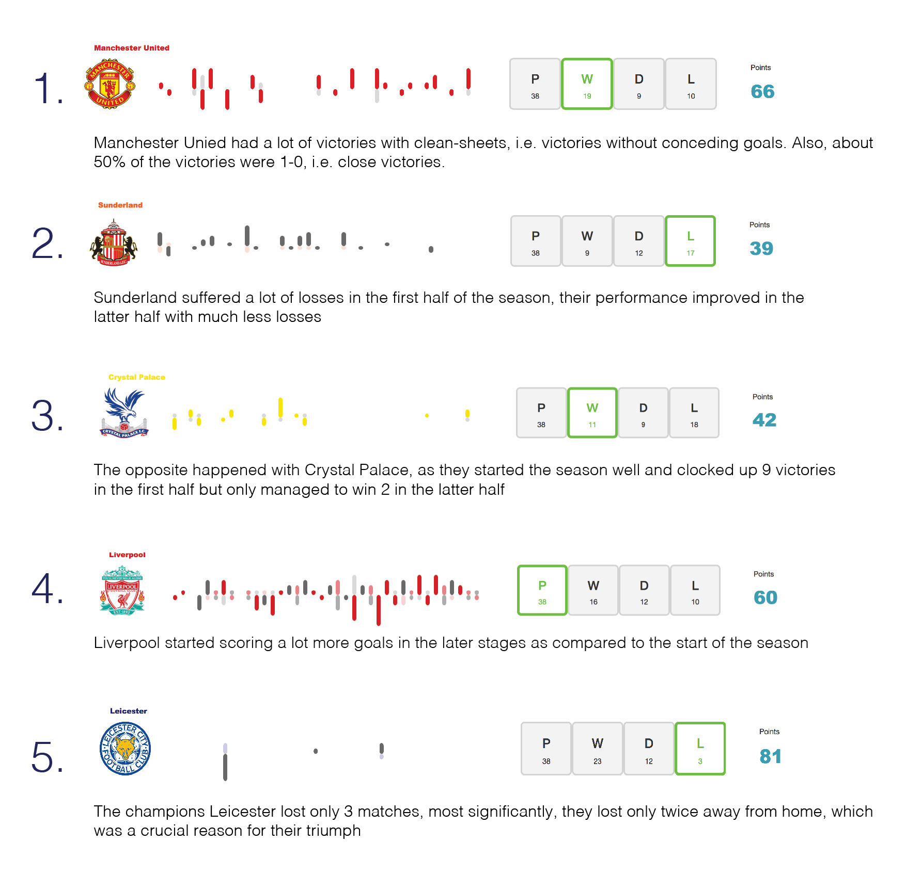

A small, unfashionable team based in England's East Midlands had somehow stormed the Premier League! With two games of the season remaining, Leicester City had already won their first top-flight league title in their 132-year history. This team were in the third tier of English football in 2009, and after climbing to the top division, they spent months the previous season in bottom place. In fact in the Christmas break of the previous season they were bottom placed.
In 2008, when they were relegated to the equivalent of the third division, the Guardian newspaper wrote: "The crowds still filed in, greeting each new season with optimism, but all too soon the realisation dawned that the cheers from the stands were for nothing - everything the club once embodied had been hollowed out from the inside, leaving only a desiccated blue and white husk."
Some say the fact such underdogs have won English football's most prestigious prize is the most unlikely event in the history of team sports. Globally. Bookmakers' odds on them winning the Premier League were an astonishing 5,000-to-1! Thus it was nothing short of a fairytale!
Being a major football fan, I wanted to create a visualization tool which marked this fascinating EPL season which would provide users the ability to visualize team perfomrances at a glance and also be able to see patterns of wins, losses and draws in general.
Although tools such as the one shown in the screenshot exist, I wanted to create a tool which could help visualize at a glance how the teams performed as the season unfolded and help in finding interesting patterns.
I had a couple of users test out the prototype to see their reactions and what they could decipher from the tool. They came up with a bunch of interesting insights.
Here is the link to the protype that I developed. Feel free to play around with it and provide feedback.
One of the feedbacks that I received and which I myself had also been contemplating on was to show more data on hover. Although one can now see the date of the match and the exact scoreline along with the names of the home and away team, it would have been great to have the names of the scorers as well. Unfortunately, that data was missing from the dataset that I was using. Another interesting path to take would be collate other datasets as well such as transfer stats, injury stats etc. to understand how that affected team’s performance, for eg. if injury to a particular player had any impact on the team’s performance or not. If and when I get such a dataset, it could be overlaid on the existing rendering to identify patterns and generate correlations. Another approach of going forward would be to scale up the same prototype across more seasons rather than focusing on a particular season and have a filter to select the season.
There are various sources which I would like to attribute for this project. Most importantly, a major amount of credit goes to Mike Bostock for his really amazing library D3, which is the backbone for this project. Also, special thanks to Joe Kampschmidt and his amazing dataset which I could leverage for this project. Apart from this, there were several instances where I ran into issues and the following links helped me overcome those hurdles.